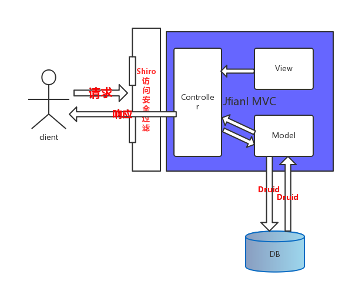

框架构成介绍
系统架构图

框架构成
MVC框架 Jfianl
权限框架 Shiro
数据库连接池 Durid
模板引擎 Freemarker
什么是Jfianl
jfinal是国产优秀的web框架.是基于 Java 语言的极速 WEB + ORM 框架 。其核心设计目标是开发迅速、代码量少、学习简单、功能强大、轻量级、易扩展、Restful。 在拥有Java语言所有优势的同时再拥有ruby、python、php等动态语言的开发效率！
总结一句：短小精悍强大,易于使用.
fianl有什么特点?
1、MVC架构，设计精巧，使用简单
2、遵循COC原则，零配置，无xml
3、独创Db + Record模式，灵活便利
4、ActiveRecord支持，使数据库开发极致快速
5、自动加载修改后的java文件，开发过程中无需重启web server
6、AOP支持，拦截器配置灵活，功能强大
7、Plugin体系结构，扩展性强
8、多视图支持，支持FreeMarker、JSP、Velocity
9、强大的Validator后端校验功能
10、功能齐全，拥有struts2的绝大部分功能
11、体积小仅248K，且无第三方依赖
Jfianl性能
final 总共8000 多行代码， 运行速度比 SSH 快五倍到八倍，所开发项目
的代码量减少 85% 以上
以上数据来源： http://www.oschina.net/question/167900_232456
这里有一些有关性能测试的数据和讨论：
http://www.oschina.net/question/173052_62228
http://www.oschina.net/question/1988085_230350
http://www.oschina.net/question/590700_120423
http://www.oschina.net/question/197668_221395
什么是Shiro
是一个强大易用的Java安全框架，提供了认证、授权、加密和会话管理功能，
可为任何应用提供安全保障 - 从命令行应用、移动应用到大型网络及企业应用
Shiro 为安全的四要素 提供了保护应用的API：
认证 - 用户身份识别，常被称为用户“登录”；
授权 - 访问控制；
密码加密 - 保护或隐藏数据防止被偷窥；
会话管理 - 每用户相关的时间敏感的状态。